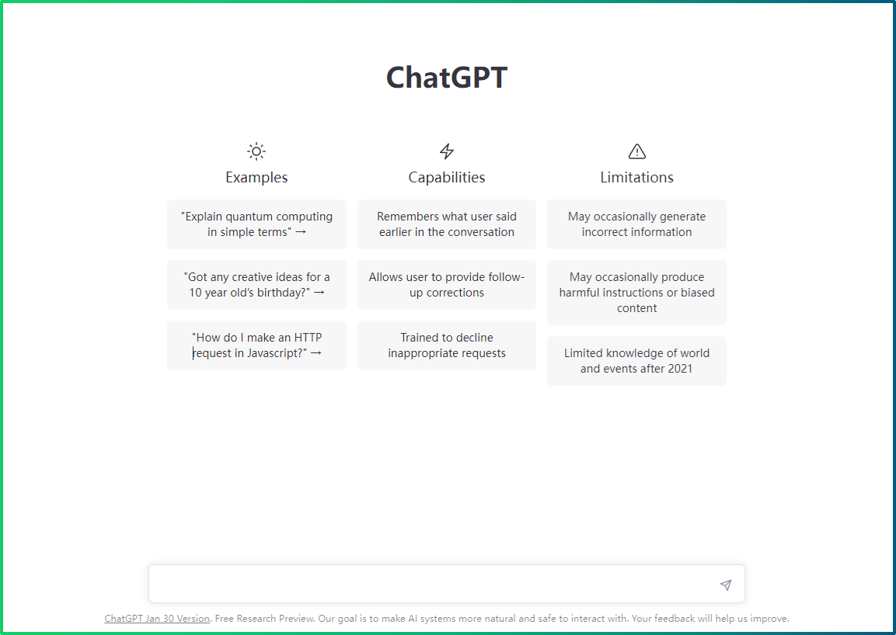
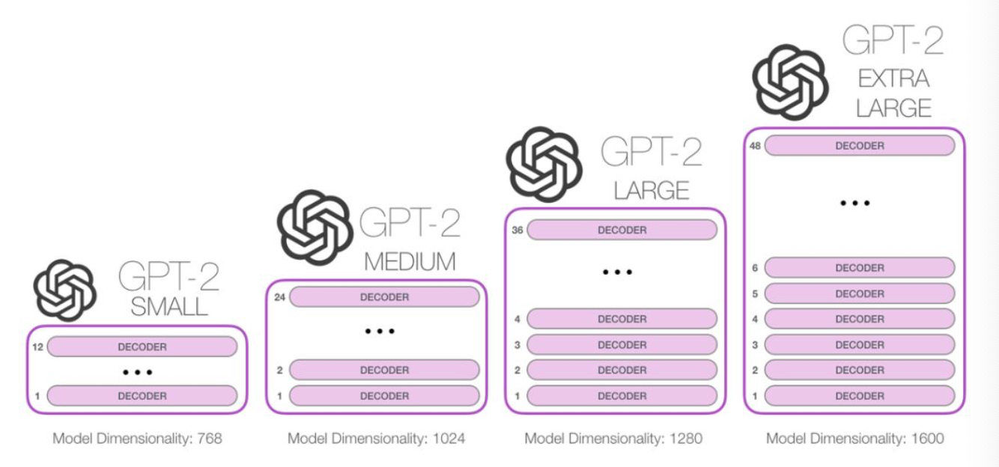
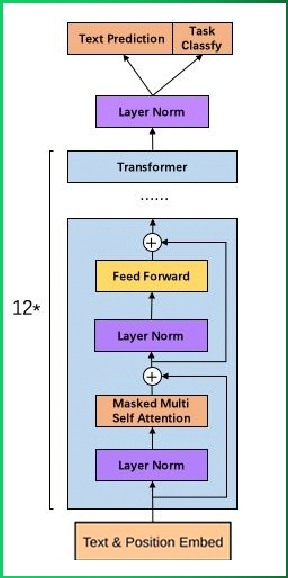
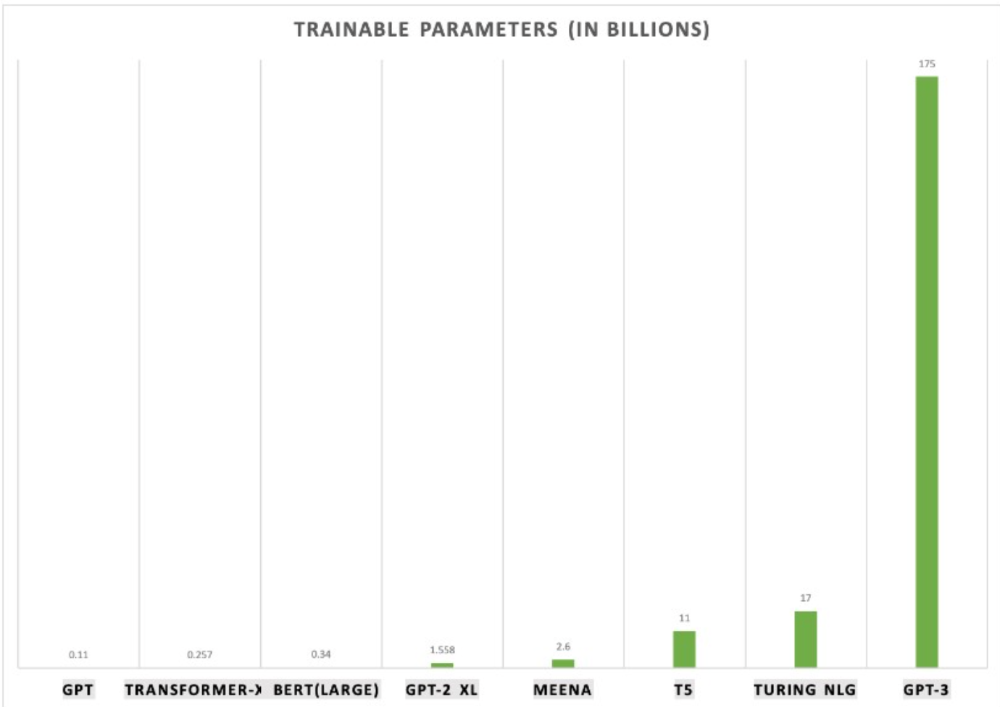
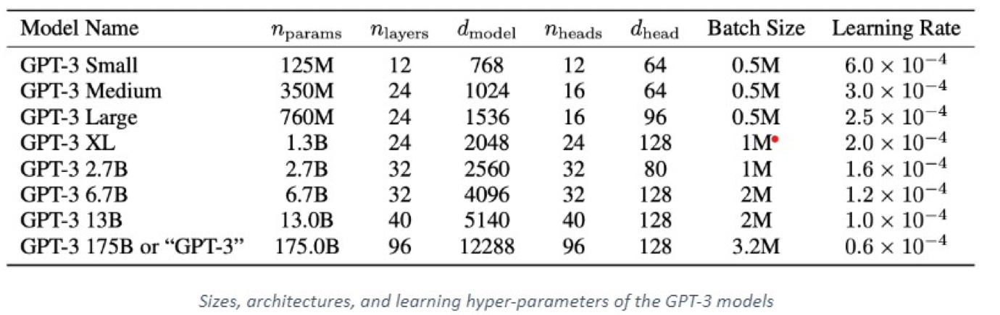
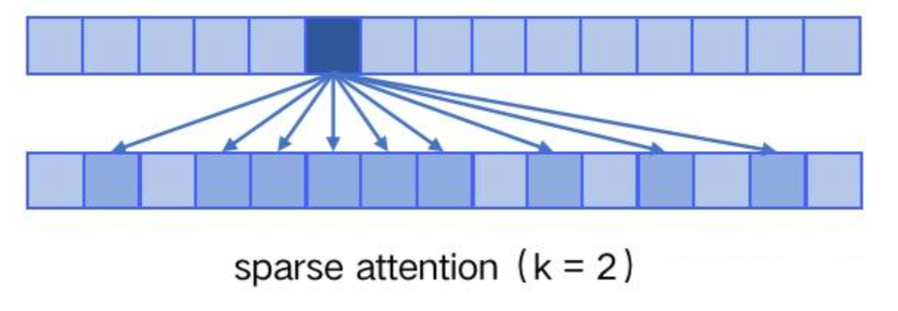

ChatGPT模型原理介绍¶
学习目标
- 了解ChatGPT的本质
- 了解GPT系列模型的原理和区别
1 什么是ChatGPT？¶
ChatGPT 是由人工智能研究实验室 OpenAI 在2022年11月30日发布的全新聊天机器人模型, 一款人工智能技术驱动的自然语言处理工具. 它能够通过学习和理解人类的语言来进行对话, 还能根据聊天的上下文进行互动, 真正像人类一样来聊天交流, 甚至能完成撰写邮件、视频脚本、文案、翻译、代码等任务.

数据显示, ChatGPT在推出2个多月的时间内，月活跃用户已经超过1亿, 这, 成为史上增长最快的消费者应用. 全球每天约有1300万独立访问者使用ChatGPT, 而爆炸性的增量也给该公司发展带来了想象空 间.
自从 ChatGPT 出现后. 突然之间, 每个人都在谈论人工智能如何颠覆他们的工作、公司、学校和生活. 那么ChatGPT背后的实现原理是什么呢？接下来我们将给大家进行详细的解析.
在我们了解ChatGPT模型原理之前, 需要回顾下ChatGPT的成长史, 即我们需要对GPT-1、GPT-2、GPT-3等一系列模型进行了解和学习, 以便我们更好的理解ChatGPT的算法原理.
2 GPT-1介绍¶
2018年6月, OpenAI公司发表了论文“Improving Language Understanding by Generative Pre-training”《用生成式预训练提高模型的语言理解力》, 推出了具有1.17亿个参数的GPT-1（Generative Pre-training , 生成式预训练）模型.
与BERT最大的区别在于GPT-1采用了传统的语言模型方法进行预训练, 即使用单词的上文来预测单词, 而BERT是采用了双向上下文的信息共同来预测单词.
正是因为训练方法上的区别, 使得GPT更擅长处理自然语言生成任务(NLG), 而BERT更擅长处理自然语言理解任务(NLU).
2.1 GPT-1模型架构¶
看三个语言模型的对比架构图, 中间的就是GPT-1:

从上图可以很清楚的看到GPT采用的是单向Transformer模型, 例如给定一个句子[u1, u2, ..., un], GPT在预测单词ui的时候只会利用[u1, u2, ..., u(i-1)]的信息, 而BERT会同时利用上下文的信息[u1, u2, ..., u(i-1), u(i+1), ..., un].
作为两大模型的直接对比, BERT采用了Transformer的Encoder模块, 而GPT采用了Transformer的Decoder模块. 并且GPT的Decoder Block和经典Transformer Decoder Block还有所不同, 如下图所示:

如上图所示, 经典的Transformer Decoder Block包含3个子层, 分别是Masked Multi-Head Attention层, encoder-decoder attention层, 以及Feed Forward层. 但是在GPT中取消了第二个encoder-decoder attention子层, 只保留Masked Multi-Head Attention层, 和Feed Forward层.
注意: 对比于经典的Transformer架构, 解码器模块采用了6个Decoder Block; GPT的架构中采用了12个Decoder Block.

2.2 GPT-1模型的特点¶
模型的一些关键参数为：
| 参数 | 取值 |
|---|---|
| transformer 层数 | 12 |
| 特征维度 | 768 |
| transformer head 数 | 12 |
| 总参数量 | 1.17 亿 |
优点：
-
在有监督学习的12个任务中, GPT-1在9个任务上的表现超过了state-of-the-art的模型
-
利用Transformer做特征抽取, 能够捕捉到更长的记忆信息, 且较传统的 RNN 更易于并行化
缺点：
-
GPT 最大的问题就是传统的语言模型是单向的.
-
针对不同的任务, 需要不同的数据集进行模型微调, 相对比较麻烦
2.3 GPT-1模型总结¶
- GPT-1证明了transformer对学习词向量的强大能力, 在GPT-1得到的词向量基础上进行下游任务的学习, 能够让下游任务取得更好的泛化能力. 对于下游任务的训练, GPT-1往往只需要简单的微调便能取得非常好的效果.
- GPT-1在未经微调的任务上虽然也有一定效果, 但是其泛化能力远远低于经过微调的有监督任务, 说明了GPT-1只是一个简单的领域专家, 而非通用的语言学家.
3 GPT-2介绍¶
2019年2月, OpenAI推出了GPT-2, 同时, 他们发表了介绍这个模型的论文“Language Models are Unsupervised Multitask Learners” （语言模型是无监督的多任务学习者）.
相比于GPT-1, GPT-2突出的核心思想为多任务学习, 其目标旨在仅采用无监督预训练得到一个泛化能力更强的语言模型, 直接应用到下游任务中. GPT-2并没有对GPT-1的网络结构进行过多的创新与设计, 而是使用了更多的网络参数与更大的数据集: 最大模型共计48层, 参数量达15亿.

3.1 GPT-2模型架构¶
在模型方面相对于 GPT-1 来说GPT-2做了微小的改动:
- LN层被放置在Self-Attention层和Feed Forward层前, 而不是像原来那样后置（目的：随着模型层数不断增加，梯度消失和梯度爆炸的风险越来越大，这些调整能够**减少预训练过程中各层之间的方差变化，使梯度更加稳定**）
- 在最后一层Tansfomer Block后增加了LN层
- 输入序列的最大长度从 512 扩充到 1024;

3.2 GPT-2模型的特点¶
优点：
-
文本生成效果好, 在8个语言模型任务中, 仅仅通过zero-shot学习, GPT-2就有7个超过了state-of-the-art的方法.
-
海量数据和大量参数训练出来的词向量模型有迁移到其它类别任务中而不需要额外的训练.
缺点:
-
无监督学习能力有待提升
-
有些任务上的表现不如随机
3.3 GPT-2模型总结¶
GPT-2的最大贡献是验证了通过海量数据和大量参数训练出来的词向量模型有迁移到其它类别任务中而不需要额外的训练. 但是很多实验也表明, GPT-2的无监督学习的能力还有很大的提升空间, 甚至在有些任务上的表现不比随机的好. 尽管在有些zero-shot的任务上的表现不错, 但是我们仍不清楚GPT-2的这种策略究竟能做成什么样子. GPT-2表明随着模型容量和数据量的增大, 其潜能还有进一步开发的空间, 基于这个思想, 诞生了我们下面要介绍的GPT-3.
4 GPT-3介绍¶
2020年5月, OpenAI发布了GPT-3, 同时发表了论文“Language Models are Few-Shot Learner”《小样本学习者的语言模型》.
通过论文题目可以看出：GPT-3 不再去追求那种极致的不需要任何样本就可以表现很好的模型，而是考虑像人类的学习方式那样，仅仅使用**极少数样本**就可以掌握某一个任务，但是这里的 few-shot 不是像之前的方式那样，使用少量样本在下游任务上去做微调，因为在 GPT-3 那样的参数规模下，即使是参数微调的成本也是高到无法估计。
GPT-3 作为其先前语言模型 (LM) GPT-2 的继承者. 它被认为比GPT-2更好、更大. 事实上, 与他语言模型相比, OpenAI GPT-3 的完整版拥有大约 1750 亿个可训练参数, 是迄今为止训练的最大模型, 这份 72 页的研究论文 非常详细地描述了该模型的特性、功能、性能和局限性.
下图为不同模型之间训练参数的对比:

4.1 GPT-3模型架构¶
实际上GPT-3 不是一个单一的模型, 而是一个模型系列. 系列中的每个模型都有不同数量的可训练参数. 下表显示了每个模型、体系结构及其对应的参数:

在模型结构上，GPT-3 延续使用 GPT 模型结构，但是引入了 Sparse Transformer 中的 sparse attention 模块（稀疏注意力）。
sparse attention 与传统 self-attention（称为 dense attention） 的区别在于：
dense attention：每个 token 之间两两计算 attention，复杂度 O(n²) sparse attention：每个 token 只与其他 token 的一个子集计算 attention，复杂度 O(n*logn)
具体来说，sparse attention 除了相对距离不超过 k 以及相对距离为 k，2k，3k，... 的 token，其他所有 token 的注意力都设为 0，如下图所示：

使用 sparse attention 的好处主要有以下两点：
- 减少注意力层的计算复杂度，节约显存和耗时，从而能够处理更长的输入序列；
- 具有“局部紧密相关和远程稀疏相关”的特性，对于距离较近的上下文关注更多，对于距离较远的上下文关注较少；
其中最大版本 GPT-3 175B 或“GPT-3”具有175个B参数、96层的多头Transformer、Head size为96、词向量维度为12288、文本长度大小为2048.
4.2 GPT-3模型的特点¶
优点：
-
整体上, GPT-3在zero-shot或one-shot设置下能取得尚可的成绩, 在few-shot设置下有可能超越基于fine-tune的SOTA模型.
-
去除了fune-tuning任务.
缺点:
-
由于40TB海量数据的存在, 很难保证GPT-3生成的文章不包含一些非常敏感的内容
-
对于部分任务比如: “填空类型”等, 效果具有局限性
- 当生成文本长度较长时，GPT-3 还是会出现各种问题，比如重复生成一段话，前后矛盾，逻辑衔接不好等等；
- 成本太大
4.3 GPT-3模型总结¶
GPT系列从1到3, 通通采用的是transformer架构, 可以说模型结构并没有创新性的设计. GPT-3的本质还是通过海量的参数学习海量的数据, 然后依赖transformer强大的拟合能力使得模型能够收敛. 得益于庞大的数据集, GPT-3可以完成一些令人感到惊喜的任务, 但是GPT-3也不是万能的, 对于一些明显不在这个分布或者和这个分布有冲突的任务来说, GPT-3还是无能为力的.
5 ChatGPT介绍¶
ChatGPT是一种基于GPT-3的聊天机器人模型. 它旨在使用 GPT-3 的语言生成能力来与用户进行自然语言对话. 例如, 用户可以向 ChatGPT 发送消息, 然后 ChatGPT 会根据消息生成一条回复.
GPT-3 是一个更大的自然语言处理模型, 而 ChatGPT 则是使用 GPT-3 来构建的聊天机器人. 它们之间的关系是 ChatGPT 依赖于 GPT-3 的语言生成能力来进行对话.
目前基于ChatGPT的论文并没有公布, 因此接下来我们基于openai官网的介绍进行理解解析。
5.1 ChatGPT原理¶
请大家先思考一个问题: “模型越大、参数越多, 模型的效果就越好么啊？”. 这个答案是否定的, 因为模型越大可能导致结果越专一, 但是这个结果有可能并不是我们期望的. 这也称为大型语言模型能力不一致问题. 在机器学习中, 有个重要的概念: “过拟合”, 所谓的过拟合, 就是模型在训练集上表现得很好, 但是在测试集表现得较差, 也就是说模型在最终的表现上并不能达到我们的预期, 这就是模型能力不一致问题.
原始的 GPT-3 就是非一致模型, 类似GPT-3 的大型语言模型都是基于来自互联网的大量文本数据进行训练, 能够生成类似人类的文本, 但它们可能并不总是产生符合人类期望的输出.
ChatGPT 为了解决模型的不一致问题, 使用了人类反馈来指导学习过程, 对其进行了进一步训练. 所使用的具体技术就是强化学习(RLHF) .
5.2 ChatGPT特点¶
优点:
-
回答理性又全面, ChatGPT更能做到多角度全方位回答
-
降低学习成本, 可以快速获取问题答案
缺点:
-
ChatGPT 服务不稳定
-
容易一本正经的"胡说八道"
6 小结¶
- 本章节主要讲述了ChatGPT的发展历程，重点对比了N-gram语言模型和神经网络语言模型的区别，以及GPT系列模型的对比.